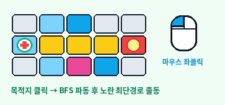
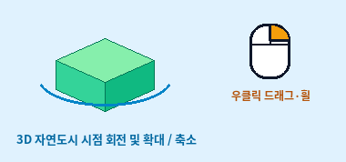
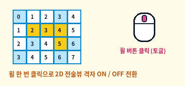
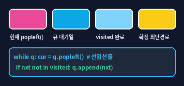
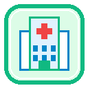
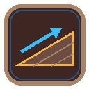
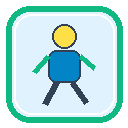

핵심 마우스 조작과 학습 단계를 확인하고 시작하세요.

환자·병원 클릭 → BFS 파동 탐색 후 노란 최단경로 이동

우클릭 드래그로 3D 회전 · 휠 스크롤로 확대/축소

휠 클릭 1회: 2D 그리드 고정 · 재클릭: 3D 복귀

분홍(추출) → 진한하늘(큐) → 연한하늘(방문) → 노랑(최단경로)

응급 병원
경사로 (감속)
시민·라바콘탐색 가속, 방문기록, 도시 구역 확장을 업그레이드하세요.